Call us to discuss your special requirements — your numbers, your catering needs, your ceremony wish-list. We are here to help.
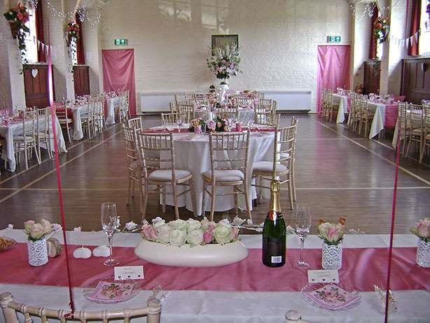
Round tables and a soft colour scheme — the hall takes on whatever style you choose.
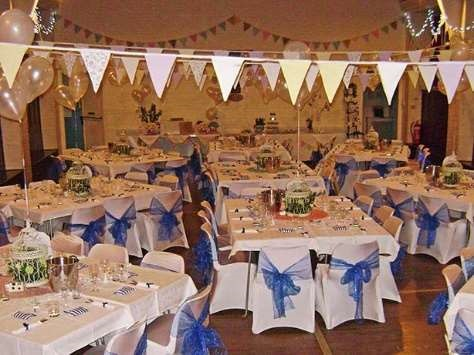
Long banquet tables seat larger parties, with bunting and balloons for a relaxed, celebratory feel.
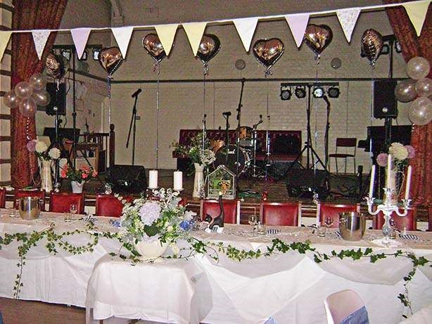
The stage easily takes a live band or DJ, so the wedding breakfast can flow straight into the evening party.
If you are thinking of tying the knot then think about being married here at Worplesdon. The village offers a wonderful experience: a traditional church wedding followed by a village reception.
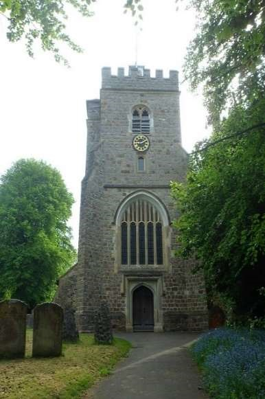
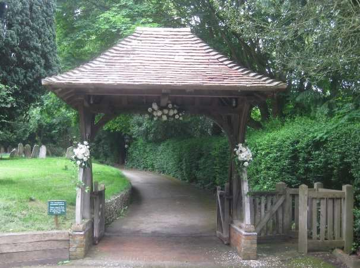
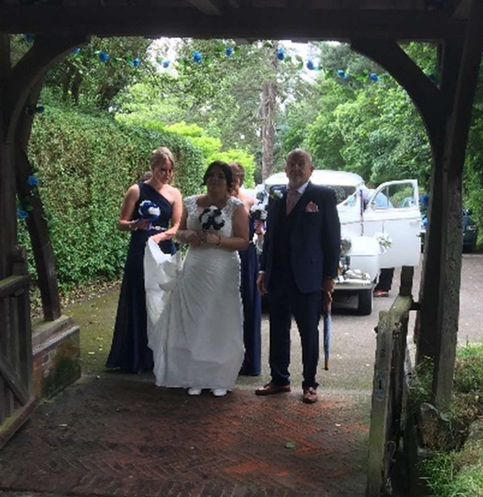
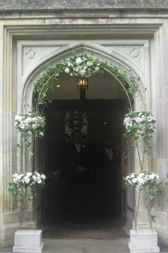
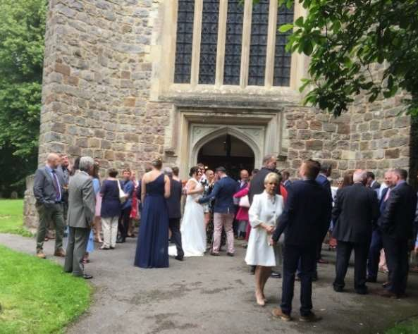
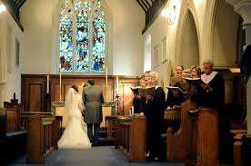
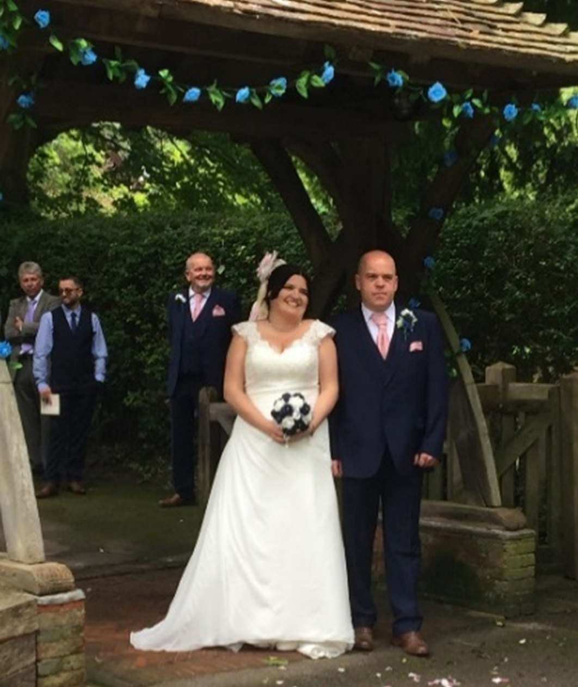
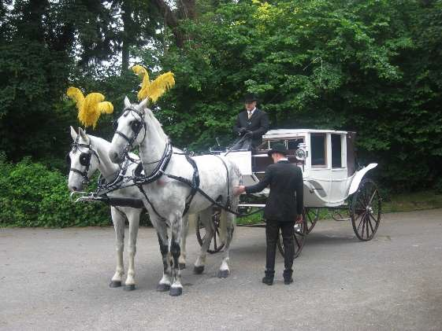
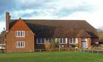
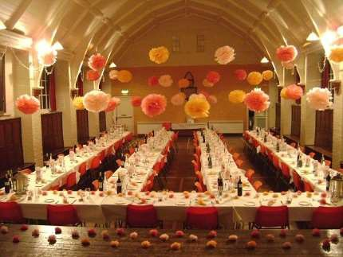